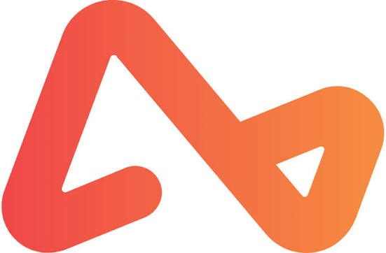

LLC Business Bank Accounts (2026)
Checking Options for Cash, Online Operations, APY Yields & Business Banking Needs
A separate business account is one practical step that helps an LLC keep cleaner records and maintain a clear separation between business and personal finances. It does not guarantee liability protection by itself, and using a personal account does not automatically erase an LLC's legal status. However, the IRS and SBA recommend keeping business and personal finances separate, and a dedicated account can make bookkeeping, tax reporting, payments, and financial controls easier to manage.
The right account depends on how your LLC operates. A cash-heavy restaurant has different needs from a remote software company, and a non-U.S. founder may face different eligibility, identity-verification, and address requirements from a U.S.-based owner. If you are still working through the setup sequence, start with our business setup guide. If you do not yet have your tax ID, see the EIN guide first.
Banks and financial platforms have different eligibility, address and identity-verification rules. A registered-agent address, virtual mailbox or virtual office may be acceptable for one purpose and rejected for another. Some providers may also require a physical operating address or additional documentation. Verify the provider's current requirements, fees, eligibility criteria and deposit-insurance disclosures before submitting an application.
- 1. Start With the Way Your LLC Moves Money
- 2. How This Comparison Was Built
- 3. Four Questions Before You Apply
- 4. Airwallex: Global & Multi-Currency (Featured)
- 5. Chase for Cash-Heavy LLCs
- 6. Mercury: Deposits vs Treasury
- 7. Relay as a Budgeting System
- 8. Bluevine and the APY Math
- 9. Novo for Simplicity
- 10. Banks, Fintechs and FDIC Coverage
- 11. Business Address Rules
- 12. Documents to Prepare
- 13. Three Decisions That Matter
- 14. Frequently Asked Questions
Start With the Way Your LLC Moves Money
A useful bank comparison starts with cash flow, not a medal table. Before looking at brand names, identify the friction you want the account to remove.
| IF THIS DESCRIBES YOUR LLC... | THE ACCOUNT TYPE TO INVESTIGATE FIRST |
|---|---|
| You operate internationally, hold 20+ currencies, or pay global contractors | Airwallex Global Business Account |
| You take cash, need teller help, or occasionally need branch services | A branch-based business checking account, such as Chase Business Complete |
| Almost everything happens online and you want strong digital controls | A digital-first business account, such as Mercury |
| You divide revenue into tax, payroll, profit and operating buckets | An account with multiple sub-accounts or similar budgeting features, such as Relay |
| You want interest-bearing balances and also need features for organizing funds or handling eligible cash deposits | An interest-bearing business account, such as Bluevine |
| You are a freelancer or small service business and want fewer moving parts | A streamlined online business checking account, such as Novo |
That starting point matters because the providers below are not interchangeable. Chase is a traditional bank with branch access. Airwallex, Mercury, Relay, Bluevine and Novo are fintech platforms or financial-technology companies whose banking services may be provided through partner banks. Product structure, eligibility, cash-deposit options, fees, and deposit-insurance arrangements differ by provider and account.
Some providers support cash deposits while others do not. Some offer interest or APY on eligible balances, subject to their current terms. Mercury also offers investment-related products that should not be confused with an FDIC-insured bank deposit.
How This 2026 Comparison Was Built
We evaluated each provider across five operational dimensions that matter to LLC owners: branch access, cash-deposit rules, interest eligibility, multi-user permissions, and account maintenance terms.
HOW THIS 2026 COMPARISON WAS BUILT
- Official Disclosures First: Base terms, fees, account features, and applicable rules were checked against published provider materials, including fee schedules and account agreements where available.
- Cash vs. Online Split: Accounts were compared based on whether they provide branch-based cash services, supported cash-deposit options, or operate primarily through digital channels.
- Yield Rules Checked: Interest rates, APYs, balance requirements, and other eligibility conditions were reviewed against the providers' published terms available for this update.
- FDIC Disclosures Verified: Bank and fintech structures are identified separately so readers can understand which institution provides the deposit account and how applicable FDIC insurance works.
- Use-Case Comparison: Features are presented according to the type of banking activity they support rather than assigning an overall winner.
Four Questions to Answer Before You Apply
Before filling out an application online or visiting a branch, review these four core operational questions:
Do you accept physical cash payments?
If your business deposits cash regularly, branch access or a provider with supported cash-deposit options can matter. Traditional banks such as Chase provide in-branch cash deposits, while digital-first platforms may rely on third-party networks, impose deposit fees or limits, or may not support cash deposits at all. Check the current cash-deposit method and fees before applying.
How many team members need card access or sub-accounts?
If you have co-founders, contractors, or expense managers who require separate cards, spending controls, or dedicated funds, compare the provider's current user-permission, card and sub-account limits. Relay, for example, is designed around multiple business accounts and team spending controls, but the available limits and features should be checked against its current plan terms.
Are you seeking APY yield on idle cash balances?
If you keep substantial operating reserves, compare the actual APY, eligibility requirements, balance limits, and plan fees rather than looking only at the headline rate. Bluevine currently publishes different APYs by plan, including 1.3% on qualifying Standard balances up to $250,000, 1.75% on qualifying Plus balances up to $250,000, and 3.0% on Premier balances under its published terms.
Does your LLC have non-US owners or physical location constraints?
Non-U.S. residents and remote founders may face additional eligibility, identity-verification, address, and ownership requirements. Do not assume that a provider accepting remote businesses will accept every foreign-owned LLC or every type of virtual, registered-agent, or residential address. Check the provider's current eligibility rules before applying.

Airwallex Is Built Around Global and Multi-Currency Business Banking
Airwallex is designed for businesses that receive, hold, convert, and send money across multiple currencies. That makes it particularly relevant to LLCs with international customers, overseas contractors, cross-border suppliers, or founders who need more than a conventional U.S.-only checking account.
Its U.S. business-account offering supports multiple accounts per legal entity, the ability to hold funds in 20+ currencies, international transfers, foreign-exchange services, corporate cards, and integrations with accounting platforms such as Xero and QuickBooks. The free Explore plan currently has no monthly user fee, while higher tiers add additional financial-management and approval features.
AIRWALLEX KEY FACTS
- Multi-Currency Accounts: Hold and manage funds in 20+ currencies and use local account details where supported.
- International Transfers: Airwallex supports transfers to 120+ countries on its current U.S. pricing page, with foreign-exchange pricing depending on the currency and transaction.
- Monthly Pricing: The current Explore plan is advertised at $0 per user/month. The Grow plan is listed at $12 per user/month plus a platform fee based on team size, while Accelerate uses custom pricing. Transaction fees can still apply.
- Corporate Cards: Airwallex offers multi-currency corporate cards and card controls for business spending, with features depending on the plan and eligibility.
- U.S. Eligibility: Airwallex's U.S. onboarding requirements include business information, formation documentation and identity verification. Non-U.S. persons can use government-issued identification in the applicable onboarding process, but eligibility and available features depend on the business and service being requested.
- FDIC / Safeguarding Structure: Airwallex is not itself a traditional FDIC-insured bank. Airwallex US, LLC is licensed or authorized as a money transmitter in applicable states, and certain U.S. services use partner financial institutions. The Borderless Card, for example, is issued by Community Federal Savings Bank, Member FDIC. The applicable protection depends on the specific Airwallex product and account structure, so do not assume every Airwallex balance has identical FDIC coverage.
Where Airwallex Fits
Airwallex may be worth investigating if your LLC:
- receives payments from customers in different countries;
- pays international contractors or suppliers;
- needs to hold multiple currencies;
- regularly converts between USD and foreign currencies;
- operates remotely across several countries; or
- wants business cards and expense controls alongside international payment tools.
It may be less relevant if your LLC mainly deposits physical cash, relies heavily on U.S. branch banking, or needs traditional teller services. Airwallex's offering is primarily digital and global rather than branch-based.
A Cash-Heavy LLC: What Chase Changes Day to Day
Chase Business Complete Banking can be relevant for brick-and-mortar storefronts, restaurants, service businesses, and other LLCs that regularly handle physical cash or want access to branch-based banking services.
| FEATURE / RULE | CHASE BUSINESS COMPLETE BANKING |
|---|---|
| Account Type | Traditional bank business checking account provided by JPMorgan Chase Bank, N.A. |
| Monthly Fee | $15 monthly service fee, with several ways to waive it, including maintaining a $2,000 minimum daily ending balance or meeting other qualifying requirements |
| Cash Deposits | Up to $5,000 in in-branch cash deposits at no additional charge during each statement cycle; additional fees may apply |
| Branch / ATM Access | Chase states that its business banking network includes more than 5,000 branches and more than 14,000 ATMs |
| FDIC Coverage | Deposits at JPMorgan Chase Bank, N.A. are subject to applicable FDIC deposit-insurance limits and rules |
Chase's current Business Complete Banking terms should be checked before applying because monthly fees, waiver requirements, cash-deposit allowances, and other account terms can change.
Mercury Has Two Very Different Money Stories
Mercury is a digital-first financial technology platform that provides business banking services through partner banks. Its features are designed around online business operations, including digital account management, team permissions and other business-finance tools.
Mercury checking and savings deposits are held through partner banks, currently including Choice Financial Group and Column N.A., Members FDIC, with eligible deposits potentially receiving expanded FDIC coverage through Mercury's sweep network, subject to applicable conditions. Mercury itself is a fintech company, not an FDIC-insured bank.
Mercury Treasury is different. Treasury is an investment product rather than an FDIC-insured bank deposit. Mercury states that Treasury funds are not deposits or other obligations of its partner banks and are not FDIC-insured; applicable securities protections and investment risks are different from those associated with a bank deposit.
Relay Is Really a Budgeting System With Bank Accounts Attached
Relay is designed for business owners who want to organize money into separate accounts and manage spending across multiple users and cards. This can be useful for businesses that separate funds for taxes, payroll, owner compensation, operating expenses, or other categories.
RELAY SYSTEM KEY FACTS
- Multiple Checking Accounts: Relay allows businesses to organize funds across separate accounts or categories, subject to the provider's current plan limits.
- Team Cards & Permissions: Businesses can issue cards and establish spending controls for team members, with available features and limits depending on the current plan.
- FDIC Deposit Structure: Relay's banking services are provided through partner financial institutions. Review the current account agreement and FDIC disclosures for the applicable program bank, coverage structure, and any sweep arrangements before relying on a specific coverage amount.
Bluevine Makes You Do the Math Before Choosing
Bluevine focuses on digital business checking with interest-bearing options, making it relevant to LLCs that keep cash reserves and want to compare yield alongside everyday business-banking features.
| FEATURE / TIER | BLUEVINE STANDARD / PLUS / PREMIER |
|---|---|
| APY Interest Rate | APY varies by plan and qualifying balance. Current published rates, balance limits, and activity requirements should be checked before applying. |
| Monthly Fee | Standard has no monthly service fee; higher-tier pricing and waiver conditions depend on the current plan terms. |
| Cash Deposit Access | Cash deposits are supported through participating retail locations and deposit-taking ATM networks, subject to current availability, limits and applicable fees. |
Because Bluevine's interest rate can depend on the plan, qualifying balance and other requirements, compare the effective APY, balance cap, qualifying activity, monthly cost and cash-deposit terms together rather than relying only on the headline rate.
Novo Is Built for Simpler Online Business Banking
Novo is designed for freelancers, solo service providers, small agencies, and other businesses that primarily operate online and want a straightforward business checking experience.
NOVO KEY HIGHLIGHTS
- No Monthly Fee: Novo advertises no monthly account fee, although individual services or transactions may have separate charges.
- Minimum Balance: Novo does not require a minimum balance to keep the account open under its published checking terms.
- ATM Fee Refunds: Novo offers reimbursement for certain third-party ATM fees, subject to its current account terms and limits.
- Payment Integrations: Novo integrates with services including Stripe, Square and PayPal, with availability and processing terms depending on the service.
- Banking Provider: Novo's banking services are provided through partner financial institutions. Review the current account disclosures for the applicable bank and deposit-insurance structure.
Bank vs Fintech: What FDIC Insurance Actually Means
Understanding how your money is held and what protection may apply is important when opening a business account in 2026.
DIRECT BANK vs. FINTECH BANKING STRUCTURES
Direct Banks (e.g. Chase): When you open a deposit account directly with an FDIC-insured bank such as JPMorgan Chase Bank, N.A., eligible deposits are generally insured by the FDIC up to the applicable legal limit, currently $250,000 per depositor, per insured bank, for each ownership category.
Fintech Platforms (e.g. Mercury, Relay, Bluevine, Novo): A fintech platform is not necessarily an FDIC-insured bank itself. Depending on the product, the fintech may arrange for customer funds to be held at one or more FDIC-insured partner banks or through another financial structure. Where pass-through FDIC insurance applies, coverage depends on the specific account structure, partner institution, ownership records, applicable limits and FDIC rules.
A fintech's branding alone does not establish FDIC insurance. Before depositing substantial operating reserves, check the provider's current disclosures to determine which institution holds the funds, whether the product is a deposit account, and what FDIC coverage applies.
Can You Use a Virtual Address to Open a Business Bank Account?
Address requirements can cause delays during business-account onboarding, particularly when the address supplied does not match the provider's verification requirements.
Under federal Customer Identification Program rules, covered financial institutions must collect and verify certain identifying information for customers. For a business customer, this can include a physical address associated with the business or the person establishing the account, depending on the circumstances and the institution's procedures.
A P.O. box, registered-agent address, virtual mailbox, or commercial mail receiving agency (CMRA) address should not automatically be treated as interchangeable with a physical operating address. A provider may accept one address for mailing while requiring another for identity or business verification.
Before applying, check the provider's current requirements for:
- Principal business address
- Owner/responsible-party residential address
- Mailing address
- Registered-agent address
- Virtual mailbox or CMRA address
- Foreign or non-U.S. owner documentation
Using a registered-agent or virtual mailing address does not guarantee account approval, and requirements can differ between banks and fintech platforms.
Documents to Prepare Before Applying
Have these five document items ready before starting an account application. Exact requirements vary by bank, account type, ownership structure, and verification process, so check the institution's current application checklist.
Approved Articles of Organization
Your state-approved formation document confirming that your LLC has been legally formed. Some banks may refer to this as a Certificate of Organization or Certificate of Formation.
IRS EIN Confirmation Letter (CP 575 or 147C)
Official IRS documentation confirming your LLC's Employer Identification Number. If you applied for an EIN but can't locate the original confirmation letter, ask the IRS about obtaining an EIN verification letter (147C).
LLC Operating Agreement
A copy of your Operating Agreement, if available or requested. Banks may use it to verify ownership, management structure, and who has authority to open or manage the account. Requirements vary, and some banks may accept other supporting documents.
Government-Issued Photo ID
An unexpired driver's license, passport, or other accepted government-issued identification for the individuals the bank needs to verify. Banks commonly collect information about people who own 25% or more of a legal entity, along with at least one control person, but the exact verification requirements can vary.
Business Address Verification
Be prepared to provide your LLC's business address and, if requested, supporting documentation such as a utility bill, lease, or other accepted record. A bank may separately ask for the physical residential address of an owner or control person. A registered-agent address, virtual address, or mailing address may not satisfy every address-verification requirement.
Three Decisions Matter More Than a #1 Ranking
Rather than relying on a single “best” overall bank label, compare your options against these three practical considerations:
1. Physical Cash Needs vs. Digital Operations: If your business regularly handles cash or needs in-person teller services, check whether a traditional bank such as Chase has convenient branches and suitable cash-deposit terms for your location. If most revenue arrives through digital payments, an online banking platform may offer useful payment integrations and account-management tools. Monthly fees, transaction limits, and available features depend on the specific account and its terms.
2. Single Owner vs. Multi-Member Controls: If your LLC has multiple members or employees who need cards or account access, compare the provider's sub-account options, user permissions, spending controls, and card limits. Relay offers tools for organizing funds across accounts and managing team access; check its current plan terms to confirm which features and limits apply.
3. Yield Opportunities vs. Everyday Convenience: If your LLC keeps a cash reserve, compare available interest rates, eligibility conditions, balance limits, and any monthly plan fees. Bluevine offers interest-bearing options on eligible plans, with rates and requirements subject to change. If you prefer a simpler digital account, Novo advertises business banking features aimed at smaller and online businesses; review its current fee schedule and any transaction-related charges before applying.
Frequently Asked Questions
LLC separation and legal questions
1
Do I legally have to open a business bank account for my LLC?
2
Does mixing personal and business money automatically destroy LLC protection?
Provider access, cash and account features
3
Can an LLC open a Chase business account online?
4
Which of these accounts accepts cash deposits?
5
Is Mercury Treasury FDIC insured?
6
Which account is best for a non-U.S. LLC owner?
Official Sources Checked for This 2026 Update
The details on this page were verified against official disclosures and fee schedules:
- Chase Business Complete Banking Schedule of Fees
- Mercury Bank & Sweep Disclosures (Choice Financial & Evolve Bank & Trust)
- Relay Financial & Thread Bank Deposit Agreement
- Bluevine Checking Account Tiers & APY Terms
- Novo & Coastal Community Bank Account Agreement
- FDIC Deposit Insurance & Pass-Through Coverage Rules
Key Takeaway for 2026
Match your business bank account selection to your LLC’s daily operational needs. Airwallex fits global businesses with multi-currency pouts and international clients. Chase may be relevant if you process cash deposits or need branch and teller access. Mercury and Relay may suit businesses that operate primarily online and need digital account management or sub-account features. Bluevine offers interest-bearing business checking options for eligible customers who want to earn interest on qualifying balances. Novo is designed around simple digital business banking for freelancers and small online businesses, with fees and account terms that should be reviewed before applying.